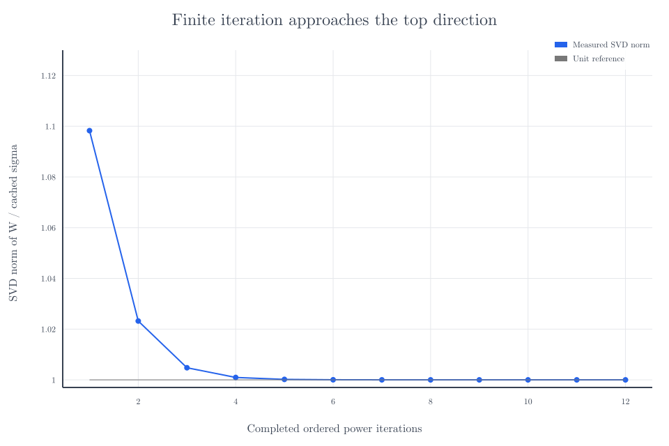
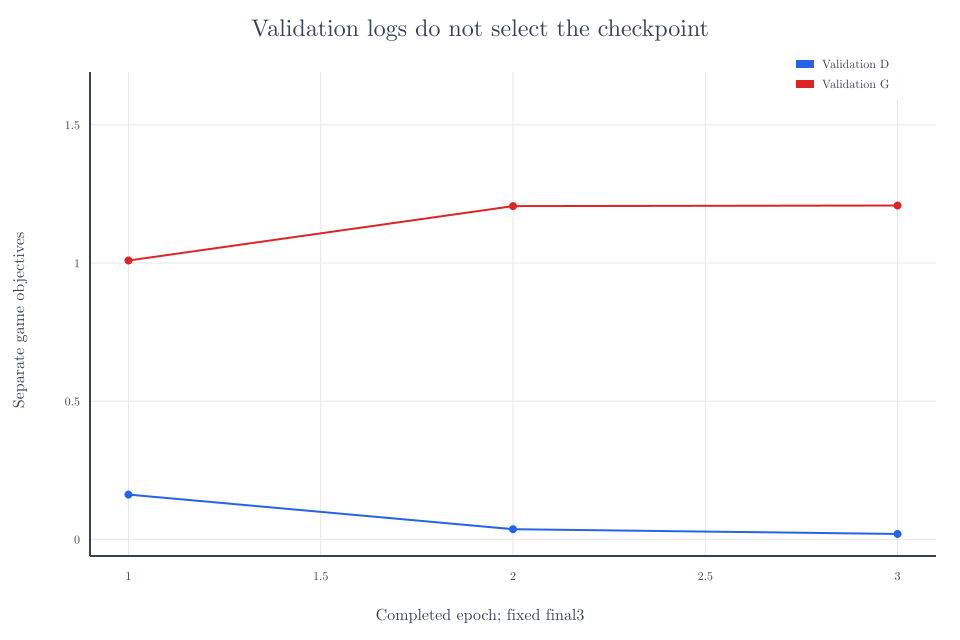
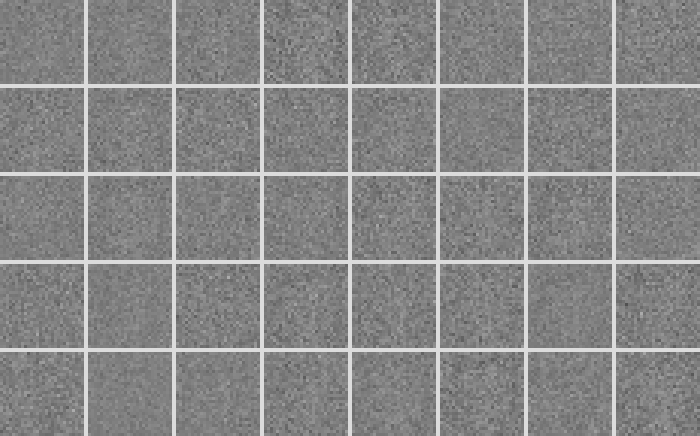
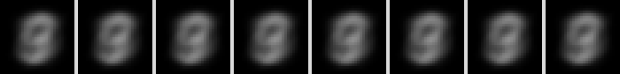
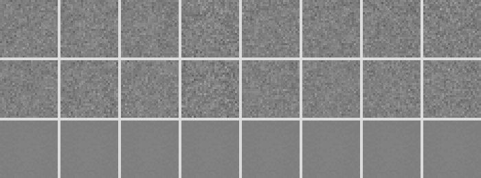
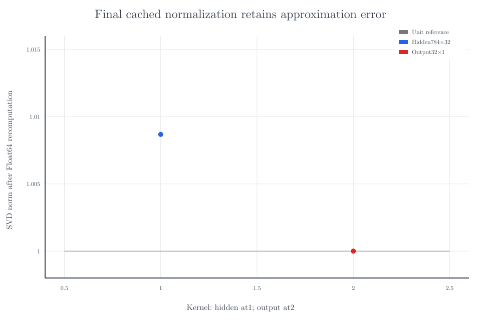

Spectral GAN: Cached Directions, Live Weight Gradients
Abstract
A compact GAN fits 1000 balanced MNIST images with two spectrally normalized discriminator kernels. Cached left/right directions are checkpointed separately from trainable weights: sixteen warm-up power iterations precede the initial snapshot, and one state-only iteration precedes every discriminator update. The generator then fits through the updated discriminator with the same cached vectors. The signed bilinear denominator remains differentiable in the weights, while the vectors are held constant in backpropagation. Three fixed epochs perform 96 writes per trainable store and produce weak grey samples. The complete editable native program preserves every original artifact; small matrix examples, independent derivatives and an SVD audit explain why estimated normalization is not an exact unit-norm certificate.
Follow data, weights and cached directions
The method reference is [Miyato et al., Spectral Normalization for Generative Adversarial Networks (2018)](https://arxiv.org/abs/1802.05957). This repository retains its own small teaching architecture: G maps16 Gaussian coordinates through32 tanh units to784 sigmoid pixels; image-only D maps784 pixels through32 tanh units to one raw score. Both D kernels are normalized; their biases are untouched. Digit labels do not enter fitting. The dense architecture, Float32 guards and state schedule below specify this example rather than reproducing the paper's convolutional benchmarks.
#include <dm/dm.hpp>
int main() {
std::filesystem::create_directories("build");
dm::graphics::Diagram d(52, 1250);
dm::graphics::DiagramNodeStyle s;
s.width = 7.5;
s.height = 3.;
s.font_size = 26;
d.node("real", {-15, 9}, "Real pixels784", s)
.node("dr", {15, 9}, "Shared spectral D\nRaw source score", s)
.node("noise", {-15, 0}, "Gaussian noise16", s)
.node("g", {-5, 0}, "Independent G\ntanh32 → sigmoid784", s)
.node("fake", {5, 0}, "Generated pixels784", s)
.node("df", {15, 0}, "Same D kernels\nSame cached u/v", s)
.node("weights", {-15, -9}, "Current D weights\nheld fixed in Advance", s)
.node("advance", {-5, -9}, "Explicit power step\nv=unit(Wu); u=unit(Wᵀv)", s)
.node("cache", {5, -9}, "Separate u/v state\nStopped in backprop", s)
.edge("real", "dr")
.edge("noise", "g")
.edge("g", "fake")
.edge("fake", "df")
.edge("weights", "advance")
.edge("advance", "cache")
.edge("cache", "df")
.text(
{0, -14}, "Per batch: advance state → write D → fresh forward, same cache → write G", 19)
.save_svg("build/spectral_gan_method.svg");
}
Check one normalized matrix and its weight derivative
For W=diag(3,2) and cached columns u=v=(1,0)ᵀ, sigma=vᵀWu=3 and Wbar=diag(1,2/3). Holding u/v fixed does not make sigma constant in W. For L=sum(Wbar), the derivative at W00 is 1/3−5/9=−2/9; the other three entries are1/3. Detaching sigma would incorrectly give1/3 for every entry. The example checks the live denominator derivative and a scalar finite difference.
Power iteration instead starts from u=(1,1)ᵀ/sqrt(2). Each iteration sets v=Wu/sqrt(sum((Wu)²)+epsilon), then u=Wᵀv/sqrt(sum((Wᵀv)²)+epsilon). There is no extra initial normalization. The plot measures the effective matrix's SVD norm after each iteration; a finite approximation may leave it above one.
#include <dm/dm.hpp>
int main() {
namespace n = dm::nn;
auto t = n::DType::Float64;
auto w = n::tensor({3., 0., 0., 2.}, {2, 2}, t).requires_grad_(),
u = n::tensor({1., 0.}, {2, 1}, t), v = u;
auto out = n::cached_spectral_kernel(w, u, v);
auto derivative = n::grad(n::sum(out.weight), {w})[0];
auto expected = n::tensor({-2. / 9, 1. / 3, 1. / 3, 1. / 3}, {2, 2}, t);
if (n::max(n::abs(derivative - expected)).item() > 1e-14)
throw std::runtime_error("live sigma derivative");
auto plus = n::tensor({3.000001, 0., 0., 2.}, {2, 2}, t),
minus = n::tensor({2.999999, 0., 0., 2.}, {2, 2}, t);
auto finite = (n::sum(n::cached_spectral_kernel(plus, u, v).weight).item() -
n::sum(n::cached_spectral_kernel(minus, u, v).weight).item()) /
2e-6;
if (std::abs(finite + 2. / 9) > 1e-9)
throw std::runtime_error("finite difference");
std::print(
"sigma={} ; Wbar diagonal=1,2/3 ; dL/dW00={} ; finite difference={}\n",
out.sigma.item(),
derivative.at({0, 0}),
finite);
u = n::full({2, 1}, 1 / std::sqrt(2.), t);
std::vector<double> x, y;
for (int i = 1; i <= 12; ++i) {
auto pair = n::cached_spectral_power_iteration(w, u);
u = pair.u;
x.push_back(i);
y.push_back(n::svd(n::cached_spectral_kernel(w, u, pair.v).weight).s.at({0}));
}
auto p = dm::graphics::RPlot::create();
p.y_limits(.997, 1.13)
.lines(x, y, "Measured SVD norm", {37, 99, 235}, 2.)
.points(x, y, "", {37, 99, 235}, 4.)
.lines({1., 12.}, {1., 1.}, "Unit reference", {120, 120, 120}, 1.)
.x_label("Completed ordered power iterations")
.y_label("SVD norm of W / cached sigma")
.title("Finite iteration approaches the top direction")
.save_svg("build/spectral_gan_toy.svg");
}sigma=3 ; Wbar diagonal=1,2/3 ; dL/dW00=-0.22222222222222227 ; finite difference=-0.22222222229029143

The reusable cache API accepts positive finite Float32/64 CPU kernels of rank at least two, flattening all leading axes as input. Vectors are columns u[out,1],v[in,1]. It computes sigma=sum(detach(v)*(flatten(W)*detach(u))) and divides W by max(sigma,floor), without an absolute value. Default floor is double(1e-6f) and squared-norm epsilon is double(1e-12f), preserving Float32-rounded guards even for Float64 inputs. Zero kernels yield zero power vectors; a negative/zero sigma uses the positive floor. First/higher weight paths stay live, both vector paths stop. Invalid or nonfinite computations are rejected.
advance_cached_spectral_state reads all /W kernels and existing matching /u,/v pairs,
computes every next pair, then writes only cache values. Missing or malformed state fails
before any write. Cache leaves follow ParameterStore's requires_grad flags, but the math
always detaches them and no optimizer owns them. Checkpoint all three stores and synchronize
shared-store mutations. SpectralGan never advances existing state implicitly.
Start with source scores whose losses can be checked by hand
For separate real and fake pools,
The real branch stops contributing to D at r≥1; the fake branch stops at f≤-1. At exactly r=1 or f=-1, native ReLU uses the zero subgradient. G has no hinge: its derivative remains -1/M everywhere, including those margins. G loss can be negative, and D scores need not lie in[-1,1]. At scalar r=1,f=-1, D=0,G=1 and D's two derivatives are zero while G's fake-score derivative is-1. Zero-margin D gradients do not imply convergence of image generation.
#include <dm/dm.hpp>
int main() {
namespace n = dm::nn;
std::vector<double> x, dr, df, gf;
for (int k = -60; k <= 60; ++k) {
x.push_back(k / 20.);
auto r = n::full({1, 1}, k / 20., n::DType::Float64).requires_grad_(),
f = n::full({1, 1}, k / 20., n::DType::Float64).requires_grad_();
const auto loss = n::models::HingeGanObjectives(r, f);
const auto d = n::grad(loss.discriminator, {r, f});
dr.push_back(d[0].item());
df.push_back(d[1].item());
gf.push_back(n::grad(n::models::HingeGanObjectives(r, f).generator, {f})[0].item());
}
auto p = dm::graphics::RPlot::create();
p.lines(x, dr, "D real derivative", {37, 99, 235}, 2.)
.lines(x, df, "D fake derivative", {22, 163, 74}, 2.)
.lines(x, gf, "G fake derivative", {220, 38, 38}, 2.)
.y_limits(-1.5, 2)
.x_label("Respective scalar raw source score")
.y_label("Derivative; each pool size1")
.title("Hinge objective: distinguish D and G directions")
.save_svg("build/spectral_gan_derivatives.svg");
auto r = n::full({1, 1}, 1., n::DType::Float64).requires_grad_(),
f = n::full({1, 1}, -1., n::DType::Float64).requires_grad_();
const auto loss = n::models::HingeGanObjectives(r, f);
const auto d = n::grad(loss.discriminator, {r, f});
const auto g = n::grad(n::models::HingeGanObjectives(r, f).generator, {f});
std::print(
"Hand-check: D={:.9f},G={:.9f}; D derivatives={},{}; G derivative={}.\n",
loss.discriminator.item(),
loss.generator.item(),
d[0].item(),
d[1].item(),
g[0].item());
}Hand-check: D=0.000000000,G=1.000000000; D derivatives=-0,0; G derivative=-1.

Native preparation and separated digit pools
The program prepares the native mnist-assets recipe and loads its saliency pools.
Fitting/validation are disjoint subsets of original MNIST training data; test IDs remain
in the original test range. Every class contributes 100 fitting and 20 validation/test
images. The loader checks shape, IDs, balance and pixel scaling to Float32[0,1].
The preview takes the first two fitting observations per class, without model selection.
Labels describe the dataset balance and preview only; fitting ignores them.
The initial test forward is archived as an explicit diagnostic control; test outcomes never
choose weights, noise banks, hyperparameters or epochs. Validation only logs diagnostics.
#include <dm/dm.hpp>
int main() {
namespace n = dm::nn;
auto home = std::filesystem::path(dm::datasets::data_home());
dm::datasets::prepare_example_data("mnist-assets", home);
auto pools = n::models::LoadSaliency(home / "saliency");
std::vector<std::int64_t> rows;
auto labels = pools[0].labels.to_vector<std::int32_t>();
for (int c = 0; c < 10; ++c) {
int count = 0;
for (std::int64_t k = 0; k < 1000 && count < 2; ++k)
if (labels[k] == c) {
rows.push_back(k);
++count;
}
}
n::save_image_grid(
n::take_rows(pools[0].images, rows), "build/spectral_gan_pools.png", 2, 0, 1, 4, 220 / 255., 3);
std::print(
"| pool | rows | each class | role |\n|---|---:|---:|---|\n| fitting |1000|100| Adam updates "
"|\n| validation |200|20| log only |\n| test |200|20| fixed final evaluation |\n");
}| pool | rows | each class | role |
|---|---|---|---|
| fitting | 1000 | 100 | Adam updates |
| validation | 200 | 20 | log only |
| test | 200 | 20 | fixed final evaluation |

Complete experiment: state first, then D, then a fresh G
G owns26416 values in four leaves; D owns25153 values in four leaves; the cache owns849 values in four columns, for52418 checkpoint values. Only51569 values are optimized. G uses seeds5801, D5807; D's uniform limit is sqrt(6.f/float(in+out)), biases are zero, and initial state columns are1.f/sqrt(float(length)). Warm-up performs16 iterations before saving the initial arrays. The pre-first-advance forward is archived; the first D phase uses the seventeenth power iteration. There is one advance before each of96 D steps, and none during G fitting, inference or restoration. A state advance does not write weights; D and G writes do not alter the cache. The code checks the ownership of each first write.
Adam uses learning rate.0002, beta1=.5, beta2=.999 and epsilon1e-8, with separate G/D states. BatchOrder seed4847 visits all1000 fitting rows once per epoch in batches up to32. Epoch noise seeds4862/4863/4864, validation4823, test4831 and changed-noise4877 preserve all source draws. D is written before recomputing G's loss through updated D using the same cached vectors. The final third epoch is fixed; validation and initial/final test diagnostics never select weights, settings or epochs. Coarse MMD is explicitly added in evaluation, outside gradient fitting. Every fitting statement remains editable below.
#include <dm/dm.hpp>
namespace nn = dm::nn;
namespace m = nn::models;
using Arrays = std::map<std::string, nn::Tensor>;
using nn::Tensor;
namespace {
void Require(bool condition, const std::string& message) {
if (!condition)
throw std::runtime_error(message);
}
void Near(double actual, double expected, double tolerance, const std::string& message) {
Require(std::abs(actual - expected) <= tolerance, message);
}
void SaveArrays(const std::string& path, const Arrays& a) {
nn::save_npz(path, nn::NamedTensors(a.begin(), a.end()));
}
bool Equal(const Tensor& a, const Tensor& b) {
return nn::equal_bits(a, b);
}
bool Equal(const Arrays& a, const Arrays& b) {
if (a.size() != b.size())
return false;
for (const auto& [key, value] : a)
if (!b.count(key) || !Equal(value, b.at(key)))
return false;
return true;
}
Tensor Gaussian(std::int64_t rows, std::int64_t width, std::uint64_t seed) {
return nn::cast(
m::GaussianNoise({rows, width}, 1, seed).reshape({rows, width}), nn::DType::Float32);
}
double MaxAbsDiff(const Tensor& a, const Tensor& b) {
return nn::max(nn::abs(nn::cast(a, nn::DType::Float64) - nn::cast(b, nn::DType::Float64))).item();
}
void Mosaic(const std::filesystem::path& path, const Tensor& images, std::int64_t columns) {
nn::save_image_grid(
images.reshape({images.size(0), 28, 28, 1}), path.string(), columns, 0, 1, 4, 220 / 255., 3);
}
Arrays Fields(const m::DenseGanOutput& o) {
Arrays a{
{"fake", o.fake},
{"real_score", o.real_score},
{"fake_score", o.fake_score},
{"discriminator_loss", o.discriminator_loss},
{"generator_loss", o.generator_loss}};
return a;
}
double Value(const Arrays& a, const std::string& key) {
return a.at(key).item();
}
/// Hinge algebra at extreme, boundary (+-1) and interior raw scores: finite
/// losses and gradients and a constant nonzero G score gradient.
void Algebra(const std::filesystem::path& root) {
Tensor real = nn::tensor({-80, -2, 1, 2, 80, .5}, {6, 1}),
fake = nn::tensor({80, 2, -1, -2, -80, -.5}, {6, 1});
real.requires_grad_();
fake.requires_grad_();
const auto loss = m::HingeGanObjectives(real, fake);
const auto dg = nn::grad(loss.discriminator, {real, fake});
const auto gg = nn::grad(loss.generator, {fake});
Arrays out{
{"real", real.detach()},
{"fake", fake.detach()},
{"discriminator_loss", loss.discriminator.detach()},
{"generator_loss", loss.generator.detach()},
{"d_real_gradient", dg[0]},
{"d_fake_gradient", dg[1]},
{"g_fake_gradient", gg[0]}};
for (const auto& [key, value] : out)
for (double x : value.to_vector<double>())
Require(std::isfinite(x), "finite " + key);
Require(gg[0].at({3, 0}) < -.15, "hinge G retains constant nonzero raw score gradient");
std::cout << "hinge algebra: D loss=" << loss.discriminator.item()
<< ", G loss=" << loss.generator.item() << ", dG/dfake=" << gg[0].values_str() << '\n';
SaveArrays((root / "hinge_algebra.npz").string(), out);
}
} // namespace
int main() {
const std::filesystem::path root = "build/spectral_gan";
const int epochs = 3;
const auto data = std::filesystem::path(dm::datasets::data_home()) / "saliency";
dm::datasets::prepare_example_data("mnist-assets", data.parent_path());
const auto pools = m::LoadSaliency(data);
std::filesystem::create_directories(root);
Algebra(root);
const Tensor validation_z = Gaussian(200, 16, 4823), test_z = Gaussian(200, 16, 4831);
nn::ParameterStore g(5801), d(5807), state(0);
std::vector<nn::ParameterStore*> stores{&g, &d, &state};
{
nn::NoGradGuard guard;
m::SpectralGan(g, d, state, nn::zeros({2, 784}), nn::zeros({2, 16}));
}
nn::advance_cached_spectral_state(
d, state, 16); // warm-up is explicit, before the initial snapshot.
auto snapshot = [&]() {
Arrays a;
for (int k = 0; k < 3; ++k)
for (const auto& key : stores[k]->names())
a.emplace(std::to_string(k) + "/" + key, stores[k]->at(key).detach().clone());
return a;
};
auto forward = [&](const Tensor& x, const Tensor& z) {
return Fields(m::SpectralGan(g, d, state, x.reshape({x.size(0), 784}), z));
};
auto evaluate = [&](const Tensor& x, const Tensor& z) {
nn::NoGradGuard guard;
auto a = forward(x, z);
a.emplace(
"pixel_mmd", m::ImqMmd(m::GanCoarsePixels(x), m::GanCoarsePixels(a.at("fake"))).value);
return a;
};
nn::OptimizerConfig config;
config.kind = nn::OptimizerKind::Adam;
config.beta1 = .5;
config.beta2 = .999;
config.epsilon = 1e-8;
nn::Optimizer go(g, .0002, config), disc(d, .0002, config);
std::vector<nn::Optimizer*> optimizers{&go, &disc};
Require(
g.count() == 26416 && d.count() == 25153 && g.size() + d.size() == 8 &&
state.count() == 849 && state.size() == 4,
"G 26416 + D 25153 = 51569 parameters, 8 tensors");
SaveArrays((root / "initial_arrays.npz").string(), snapshot());
SaveArrays((root / "initial_outputs.npz").string(), evaluate(pools[2].images, test_z));
nn::BatchOrder order(1000, 32, 4847);
std::ofstream history(root / "history.tsv"), batches(root / "batches.tsv");
history.precision(17);
history << "epoch\tvalidation_discriminator_loss\tvalidation_generator_loss\tvalidation_coarse_"
"pixel_mmd\n";
batches << "epoch\tstep\trow\tsource_id\n";
const auto source = nn::cast(pools[0].source, nn::DType::Int64).to_vector<std::int64_t>();
int steps = 0;
const auto started = std::chrono::steady_clock::now();
for (int epoch = 1; epoch <= epochs; ++epoch) {
const Tensor noise = Gaussian(1000, 16, 4861 + epoch);
order.begin_epoch();
int seen = 0;
for (;;) {
const auto rows = order.next();
if (rows.empty())
break;
const Tensor x = nn::take_rows(pools[0].images, rows), z = nn::take_rows(noise, rows);
if (!steps)
SaveArrays((root / "first_forward.npz").string(), evaluate(x, z));
{
const auto before = steps ? Arrays{} : snapshot();
nn::advance_cached_spectral_state(d, state); // state only, once BEFORE D.
if (!steps) {
const auto after = snapshot();
bool changed = false;
for (const auto& [key, value] : before) {
if (key.rfind("2/", 0) == 0)
changed |= !Equal(value, after.at(key));
else
Require(Equal(value, after.at(key)), "power iteration leaves G/D unchanged");
}
Require(changed, "power iteration changes state");
}
}
for (int group : {1, 0}) {
const auto before = steps ? Arrays{} : snapshot();
// D first; recompute a fresh forward through the updated D for G.
const auto fields = forward(x, z);
const auto loss = fields.at(group == 1 ? "discriminator_loss" : "generator_loss");
optimizers[group]->step(nn::grad(loss, stores[group]->parameters()));
if (!steps) {
const auto after = snapshot();
bool changed = false;
for (const auto& [key, value] : before) {
if (key.rfind(std::to_string(group) + "/", 0) == 0)
changed |= !nn::equal_bits(value, after.at(key));
else
Require(nn::equal_bits(value, after.at(key)), "unselected group unchanged");
}
Require(changed, "selected group changed");
}
}
for (auto row : rows)
batches << epoch << '\t' << steps << '\t' << row << '\t' << source[row] << '\n';
++steps;
seen += int(rows.size());
}
Require(seen == 1000, "all fitting MNIST examples ONCE per epoch");
const auto v = evaluate(pools[1].images, validation_z);
history << epoch << '\t' << Value(v, "discriminator_loss") << '\t' << Value(v, "generator_loss")
<< '\t' << Value(v, "pixel_mmd") << '\n';
std::cout << "epoch " << epoch << ": diagnostic D loss=" << Value(v, "discriminator_loss")
<< ", G loss=" << Value(v, "generator_loss")
<< ", coarse MMD=" << Value(v, "pixel_mmd") << std::endl;
}
const double seconds =
std::chrono::duration<double>(std::chrono::steady_clock::now() - started).count();
const auto checkpoint = (root / "final.npz").string();
Require(steps == 96 && go.iterations() == 96 && disc.iterations() == 96, "96 D and 96 G writes");
SaveArrays(checkpoint, snapshot());
nn::ParameterStore restored_g(1), restored_d(2), restored_state(3);
{
nn::NoGradGuard guard;
m::SpectralGan(restored_g, restored_d, restored_state, nn::zeros({2, 784}), nn::zeros({2, 16}));
}
for (const auto& [key, value] : nn::load_npz(checkpoint))
(key[0] == '0' ? restored_g
: key[0] == '1' ? restored_d
: restored_state)
.set(key.substr(2), value);
auto restored_arrays = [&]() {
Arrays a;
for (int k = 0; k < 3; ++k) {
auto& store = k == 0 ? restored_g : k == 1 ? restored_d : restored_state;
for (const auto& key : store.names())
a.emplace(std::to_string(k) + "/" + key, store.at(key).detach().clone());
}
return a;
};
auto sample = [&](const Tensor& z) {
nn::NoGradGuard guard;
return m::MlpGanGenerate(restored_g, z);
};
auto restored_evaluate = [&](const Tensor& x, const Tensor& z) {
nn::NoGradGuard guard;
auto a = Fields(
m::SpectralGan(restored_g, restored_d, restored_state, x.reshape({x.size(0), 784}), z));
a.emplace(
"pixel_mmd", m::ImqMmd(m::GanCoarsePixels(x), m::GanCoarsePixels(a.at("fake"))).value);
return a;
};
Require(Equal(snapshot(), restored_arrays()), "all final G/D weights restore BIT EXACT");
const auto before = restored_arrays();
const auto output = restored_evaluate(pools[2].images, test_z);
const Tensor repeat = sample(test_z);
Require(
Equal(output.at("fake"), repeat), "noise-only generation BIT EXACT matches GAN evaluation");
const double parity = MaxAbsDiff(sample(nn::take_rows(test_z, {0})), nn::take_rows(repeat, {0}));
Require(parity < 2e-6, "G single/batch parity");
const Tensor changed_z = Gaussian(200, 16, 4877), changed_images = sample(changed_z);
Require(!Equal(changed_images, repeat), "different noise affects G images");
const Tensor zero_images = sample(nn::zeros({200, 16}));
Require(!Equal(zero_images, repeat), "G not constant zero-latent mapping");
SaveArrays(
(root / "controls.npz").string(),
{{"changed_z", changed_z},
{"changed_images", changed_images},
{"zero_z", nn::zeros({200, 16})},
{"zero_images", zero_images}});
Require(Equal(before, restored_arrays()), "all G/D diagnostic generation immutable");
SaveArrays((root / "outputs.npz").string(), output);
const Tensor fit_mean =
nn::tile(nn::mean(pools[0].images.reshape({1000, 784}), {0}, true), {200, 1});
const double mean_mmd =
m::ImqMmd(m::GanCoarsePixels(pools[2].images), m::GanCoarsePixels(fit_mean)).value.item();
double real_accuracy = 0, fake_accuracy = 0;
const auto real_score = output.at("real_score").to_vector<float>(),
fake_score = output.at("fake_score").to_vector<float>();
for (int b = 0; b < 200; ++b)
real_accuracy += real_score[b] >= 0, fake_accuracy += fake_score[b] < 0;
const auto pixel_mean = nn::mean(nn::cast(repeat, nn::DType::Float64), {0}, true);
const double mean_pixel = nn::mean(pixel_mean).item(),
pixel_variance =
nn::mean(nn::square(nn::cast(repeat, nn::DType::Float64) - pixel_mean)).item();
Mosaic(root / "generated.png", nn::slice_axis(repeat, 0, 0, 40), 8);
Mosaic(root / "fit_mean.png", nn::slice_axis(fit_mean, 0, 0, 8), 8);
// Exact spectral norms of the effective (normalized) kernels: finite power
// iteration does not guarantee 1, so they are reported, not certified.
double sn[2];
for (int k = 0; k < 2; ++k) {
const std::string name = k ? "output" : "hidden";
auto& d = restored_d;
auto& st = restored_state;
const Tensor w = nn::cast(d.at(name + "/W"), nn::DType::Float64);
const Tensor sigma = nn::sum(
nn::cast(st.at(name + "/v"), nn::DType::Float64) *
nn::matmul(w, nn::cast(st.at(name + "/u"), nn::DType::Float64)));
sn[k] = nn::svd(w / std::max(sigma.item(), 1e-6)).s.at({0});
}
std::cout << "effective kernel spectral norms (exact SVD): hidden=" << sn[0]
<< ", output=" << sn[1] << '\n';
std::ofstream meta(root / "metrics.json");
meta.precision(17);
meta << "{\"generator_parameters\":26416,\"discriminator_parameters\":25153,\"epochs\":" << epochs
<< ",\"steps_per_group\":" << steps << ",\"optimizer_updates\":" << 2 * steps
<< ",\"selected_epoch_fixed_final\":" << epochs
<< ",\"test_discriminator_loss\":" << Value(output, "discriminator_loss")
<< ",\"test_generator_loss\":" << Value(output, "generator_loss")
<< ",\"test_coarse_pixel_mmd\":" << Value(output, "pixel_mmd")
<< ",\"fit_mean_coarse_pixel_mmd\":" << mean_mmd
<< ",\"test_discriminator_real_accuracy\":" << real_accuracy / 200
<< ",\"test_discriminator_fake_accuracy\":" << fake_accuracy / 200
<< ",\"generated_mean_pixel\":" << mean_pixel
<< ",\"generated_mean_per_pixel_variance\":" << pixel_variance
<< ",\"single_batch_max_error\":" << parity
<< ",\"effective_spectral_norm_hidden\":" << sn[0]
<< ",\"effective_spectral_norm_output\":" << sn[1] << ",\"training_seconds\":" << seconds
<< "}\n";
Require(bool(meta) && bool(history) && bool(batches), "complete GAN artifacts");
history.close();
batches.close();
meta.close();
std::cout << "fixed FINAL epoch " << epochs
<< ", test D/G=" << Value(output, "discriminator_loss") << "/"
<< Value(output, "generator_loss") << ", coarse MMD=" << Value(output, "pixel_mmd")
<< ", mean baseline=" << mean_mmd
<< ", D real/fake accuracy (threshold 0)=" << real_accuracy / 200 << "/"
<< fake_accuracy / 200 << ", mean pixel=" << mean_pixel
<< ", pixel variance=" << pixel_variance
<< "; D then G/restore/noiseOnly/immutable PASS (training " << seconds
<< " s)\nArtifacts: " << root.string() << "\nAll spectral_gan checks passed.\n";
std::ifstream input(root / "history.tsv");
std::string header;
std::getline(input, header);
std::vector<double> axis, dl, gl;
double epoch, a, b, mmd;
while (input >> epoch >> a >> b >> mmd) {
axis.push_back(epoch);
dl.push_back(a);
gl.push_back(b);
}
const double low = std::min(
{0., *std::min_element(dl.begin(), dl.end()), *std::min_element(gl.begin(), gl.end())});
const double high =
std::max(*std::max_element(dl.begin(), dl.end()), *std::max_element(gl.begin(), gl.end()));
auto p = dm::graphics::RPlot::create();
p.y_limits(low - .05 * (high - low), high + .4 * (high - low))
.lines(axis, dl, "Validation D", {37, 99, 235}, 2.)
.points(axis, dl, "", {37, 99, 235}, 4.)
.lines(axis, gl, "Validation G", {220, 38, 38}, 2.)
.points(axis, gl, "", {220, 38, 38}, 4.)
.x_label("Completed epoch; fixed final3")
.y_label("Separate game objectives")
.title("Validation logs do not select the checkpoint")
.save_svg("build/spectral_gan_learning.svg");
}hinge algebra: D loss=28.1667, G loss=0.25, dG/dfake=[[-0.166667], [-0.166667], [-0.166667], [-0.166667], [-0.166667], [-0.166667]] epoch 1: diagnostic D loss=0.161854, G loss=1.00915, coarse MMD=0.120623 epoch 2: diagnostic D loss=0.0365898, G loss=1.20601, coarse MMD=0.1204 epoch 3: diagnostic D loss=0.0193689, G loss=1.20816, coarse MMD=0.120147 effective kernel spectral norms (exact SVD): hidden=1.00868, output=1 fixed FINAL epoch 3, test D/G=0.00978997/1.20336, coarse MMD=0.117836, mean baseline=0.000135779, D real/fake accuracy (threshold 0)=1/1, mean pixel=0.499476, pixel variance=0.00160577; D then G/restore/noiseOnly/immutable PASS (training 0.512585 s) Artifacts: build/spectral_gan All spectral_gan checks passed.

The held-out samples remain weak
| Fixed final diagnostic | Value |
|---|---|
| D objective | 0.0097899660 |
| G objective | 1.2033618689 |
| Coarse-pixel MMD² | 0.1178356409 |
| Repeated fitting-mean MMD² | 0.0001357794 |
| D real/fake source accuracy | 1.000/1.000 |
| Generated mean pixel | 0.4994755358 |
| Mean per-pixel variance across generated rows | 0.0016057701 |
Source accuracy uses raw score≥0 for real and score<0 for fake. It measures this discriminator on these two sources, not digit recognition, calibration or sample realism. The gallery retains the first 40 fixed-bank outputs, without choosing attractive samples. Most remain grey fields rather than convincing digits. A low D loss or negative G loss does not turn this short game into a successful image model.
#include <dm/dm.hpp>
int main() {
std::filesystem::copy_file(
"build/spectral_gan/generated.png",
"build/spectral_gan_generated.png",
std::filesystem::copy_options::overwrite_existing);
std::print("First40 fixed-bank samples; no gallery selection.\n");
}First40 fixed-bank samples; no gallery selection.

The coarse diagnostic has a deliberately visible blind spot
The MMD diagnostic first averages each 7×7 pixel block, giving16 coordinates per image, and divides those coordinates by4. It then averages IMQ kernels with constants1,4,16 and excludes within-pool diagonals in the unbiased two-sample estimate. This statistic can be negative at finite sample size and discards fine digit structure. The baseline repeats the fitting-only mean image200 times; it uses no held-out pixels to construct it. Its much smaller value shows why coarse MMD alone cannot certify sample quality or coverage. Neither the mean nor MMD adds a fitting objective or selects the checkpoint.
#include <dm/dm.hpp>
int main() {
std::filesystem::copy_file(
"build/spectral_gan/fit_mean.png",
"build/spectral_gan_mean.png",
std::filesystem::copy_options::overwrite_existing);
std::print(
"Repeated fitting mean: MMD²=0.0001357794; generator: 0.1178356409. Both use the same200 "
"held-out images.\n");
}Repeated fitting mean: MMD²=0.0001357794; generator: 0.1178356409. Both use the same200 held-out images.

Changed noise is a control, not evidence of realistic samples
Seed4877 supplies the changed bank; the zero bank has the same shape. The restored G responds to both changes, while standalone generation on the fixed bank matches the full forward bit for bit. The first sample agrees between single and batch inference (maximum error0). Every saved weight and cache column restores exactly, and all diagnostic calls leave all three stores unchanged. Responsiveness proves dependence on the input, not useful mode coverage, diversity of recognizable digits or convergence.
#include <dm/dm.hpp>
int main() {
namespace n = dm::nn;
std::map<std::string, n::Tensor> a, c;
for (const auto& [k, v] : n::load_npz("build/spectral_gan/outputs.npz"))
a.emplace(k, v);
for (const auto& [k, v] : n::load_npz("build/spectral_gan/controls.npz"))
c.emplace(k, v);
auto first = [](const auto& x) { return n::slice_axis(x, 0, 0, 8); };
auto images = n::concat(
{first(a.at("fake")), first(c.at("changed_images")), first(c.at("zero_images"))}, 0);
n::save_image_grid(
images.reshape({24, 28, 28, 1}), "build/spectral_gan_noise.png", 8, 0, 1, 4, 220 / 255., 3);
std::print(
"Rows: fixed seed4831; changed seed4877; zero input. All control weights unchanged.\n");
}Rows: fixed seed4831; changed seed4877; zero input. All control weights unchanged.

Audit the final cached estimate with an SVD
The source audit promotes final W,u,v to Float64, recomputes sigma in Float64, divides by max(sigma,1e-6), and takes the largest singular value. This is an audit of a Float64 recomputation from the saved Float32 checkpoint, not an SVD of a previously rounded Float32 Wbar. The hidden norm is about1.008681 and output1.000000028. Finite power iteration and weight movement after the state step leave a measurable approximation error. These values are reported without a unit-kernel or whole-network certificate.
#include <dm/dm.hpp>
int main() {
namespace n = dm::nn;
std::map<std::string, n::Tensor> a;
for (const auto& [k, v] : n::load_npz("build/spectral_gan/final.npz"))
a.emplace(k, v);
std::vector<double> norms;
std::print("| kernel | Float64 audit SVD norm |\n|---|---:|\n");
for (const std::string name : {"hidden", "output"}) {
auto w = n::cast(a.at("1/" + name + "/W"), n::DType::Float64),
u = n::cast(a.at("2/" + name + "/u"), n::DType::Float64),
v = n::cast(a.at("2/" + name + "/v"), n::DType::Float64);
auto sigma = n::sum(v * n::matmul(w, u));
auto norm = n::svd(w / std::max(sigma.item(), 1e-6)).s.at({0});
norms.push_back(norm);
std::print("| {} | {:.12f} |\n", name, norm);
}
auto p = dm::graphics::RPlot::create();
p.y_limits(.998, 1.016)
.lines({.5, 2.5}, {1., 1.}, "Unit reference", {120, 120, 120}, 1.)
.points({1.}, {norms[0]}, "Hidden784×32", {37, 99, 235}, 5.)
.points({2.}, {norms[1]}, "Output32×1", {220, 38, 38}, 5.)
.x_label("Kernel: hidden at1; output at2")
.y_label("SVD norm after Float64 recomputation")
.title("Final cached normalization retains approximation error")
.save_svg("build/spectral_gan_norms.svg");
}| kernel | Float64 audit SVD norm |
|---|---|
| hidden | 1.008680985915 |
| output | 1.000000027842 |

Verification and limits
The complete native program matches all seven original archives/764429 values exactly in dtype, shape and value bytes, both source PNGs, both TSVs and every non-timing metric. Ten additional first-phase probe archives match364381 native values bit for bit across initialization, warm-up, cache advance, initial/advanced gradients, D write and fresh G write. The frozen source and helper snapshots remain beside those verification receipts.
An independent NumPy checker imports no datamunge and does no fitting. It checks339561 forward values,129554 parameter derivative values across the first phases,22 scalar finite differences,16 warm-up iterations,849 state values,52418 exact checkpoint values and all3000 batch-row visits. It separately reproduces both final SVD audits and ownership controls. Native, Python and R component checks cover owned records, invalid inputs, live denominator paths and caller-owned updates. Those checks do not complete separate Python/R experiment loops.
This is one fixed short run without a seed sweep, uncertainty analysis or paper-scale image benchmark. Perfect real/fake source separation here coexists with weak generated samples; the repeated fitting mean still scores much better on the coarse diagnostic. Estimated spectral normalization explains a computation and update schedule; these results establish neither realistic generation, convergence nor a certified Lipschitz bound.